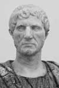

Roma Cumhuriyeti’nin efsanevi kurucusu Lucius Junius Brutus, Roma şehrinin son kralını devirmiştir. Monarkı sürgüne gönderdikten sonra Roma’yı yönetme gücünü senatonun ellerine teslim etmiştir. Bu temsili organ, şehri ve sonraki beş yüz yıl boyunca büyüyen bir imparatorluğu yönetecektir.

Roma Cumhuriyeti, yüzyıllar sonra Amerika Birleşik Devletleri’nin anayasasını yazanlara da bir örnek teşkil etmiştir. Antik Roma’dan etkilenen anayasa komisyonunun delegeleri, yasama organının bir kısmını teşkil eden üst parlamentoya senato adını vermişlerdir (1787).
Romalı tarihçilere göreyse cumhuriyetin kurucusu olan Brutus kesinlikle bir idealist değildi. Roma kralına karşı isyanı, tamamen kişisel bir intikam hikayesinden ibaretti. Kralın oğullarından birisinin Brutus’un bir akrabasına tecavüz etmesi onu başkaldırıya sürüklemişti. Sextus Tarquinus’un Lucretia’ya tecavüz etmesi Antik Roma’nın en ünlü skandalları arasında yer almaktadır. Aynı şekilde şehrin tarihinde de bir dönüm noktası olmuştur.
Etrüsk asilzadeleri olan Tarquinler kuruluşundan itibaren (MÖ 753) Roma’yı yönetmişlerdi. Brutus’un döneminde tahtta “Onurlu Tarquin” olarak da bilinen Lucius Tarquinus Superbus bulunuyordu. Kayınpederi Servius Tullius’u öldürerek iktidarı ele geçirmişti. Bu, onun döneminde işlenecek olan bir dizi cinayetin sadece ilkiydi.
Tarquinlerin uzak bir akrabası olan Brutus başlangıçta onların dostuydu. Ne var ki MÖ 509 yılında savaş meydanındayken Lucretia’nın tecavüze uğradığını öğrendi. Hızla Roma’ya geri döndü. Aile şereflerine leke sürüldüğünü düşünen Lucretia intihar edince Brutus’un kanlı hançeri onun elinden aldığı ve kralı devirmeye yemin ettiği söylenir.
Kralın devrilmesinin ardından, Brutus Tarquinlerin tahtta dönmek için düzenledikleri çeşitli saldırıları bertaraf etti. Efsaneye göre Brutus kendi oğulları olan Titus ve Tiberius’u dahi monarşiyi geri getirmek için hazırlanan bir komploya karıştıkları gerekçesiyle idam ettirmiştir. Bunun ardından Brutus, Roma vatandaşlarını bir daha asla kral egemenliğini kabul etmemeleri için yemin etmeye zorladı. Monarşi karşıtlığı gelecekte de pek çok Romalının siyasal kimliğinin merkezinde yer alacaktı.
Livy olarak da bilinen Roma tarihçisi Titus Livius’a (MÖ 59-MS 17) göre Brutus savaşırken hayatını kaybetmiştir. O ve eski kralın oğlu Arruns Tarquinius karşılıklı dövüşürken birbirlerini öldürmüşlerdir.
Ek Bilgiler
1- Brutus, monarşi düşmanlığını kendi soyundan gelenlere de aktarmıştı. Bunlardan biri de Marcus Junius Brutus’tu (MÖ 85-42). Julius Sezar’a (MÖ 100-44) suikast düzenleyenlerden birisi olan Brutus, Sezar’ın kendisini kral ilan etmesini engellemek istemişti.
2- Çeşitli Shakespeare oyunlarında karşımıza çıkan Lucretia, 1594’te yazılan The Rape of Lucrece (Lucrece Tecavüzü) isimli şiirsel anlatının da ana karakteridir.
3- Senato kelimesi esas olarak bir araya gelmiş Roma asilleri anlamına gelmektedir. Latince’deki senex (yaşlı adam) kelimesinden türetilmiştir. Roma Senatosu bin yıldan uzun bir süre boyunca ayakta kalmış, Roma İmparatorluğu’nun çöküşünün ardından 7. yy’da dağılmıştır.